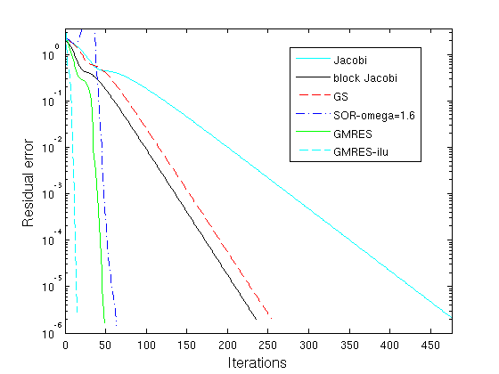

Contents
function A1q3()
close all
clc
sigma = -10;
tau = -20;
n = 2^4;
h = 1/(n+1);
beta = sigma*h/2;
gamma = tau*h/2;
fprintf('\n =====================================================')
fprintf('\n Solving the Convection-Diffusion equation with\n')
fprintf(' beta = %2.4f, gamma = %2.4f and n = %3i\n',beta,gamma,n)
fprintf(' =====================================================\n')
A = ConvectionDiffusion(beta,gamma,n);
u = @(x,y) sin(pi*x).*cos(pi*y);
f = @(x,y,sigma,tau) 2*pi^2*u(x,y)+sigma*pi*cos(pi*x).*cos(pi*y) ...
-tau*pi*sin(pi*x).*sin(pi*y);
x = linspace(0,1,n+2);
[X,Y] = meshgrid(x,x);
F = f(X,Y,sigma,tau);
F(:,1) = sparse(n+2,1);
F(:,end) = sparse(n+2,1);
F = h^2*F(:);
uE = u(X,Y);
uE = uE(:);
tic
uA = A\F;
Dtime = toc;
fprintf('\n Time using backslash = %4.4f',Dtime)
fprintf('\n solution norm = %1.4e \n\n\n',norm(uE-uA,inf));
x = sparse((n+2)^2,1);
max_iter = 2000;
tol = 1e-6;
=====================================================
Solving the Convection-Diffusion equation with
beta = -0.2941, gamma = -0.5882 and n = 16
=====================================================
Time using backslash = 0.0011
solution norm = 5.7838e-03
Jacobi
[~,rJ,iterJ] = Jacobi(max_iter,tol,x,A,F);
------------------
| Jacobi |
------------------
Residual after error 476 interations = 2.1153e-06
Time to run Jacobi = 0.0130
BLKJacobi
[~,rBLK,iterBLK] = BLKJacobi(max_iter,tol,x,A,F);
------------------
| BLK Jacobi |
------------------
Residual after error 235 interations = 2.0259e-06
Time to run Jacobi = 0.0112
GS
[~,rGS,iterGS] = GS(max_iter,tol,x,A,F);
------------------
| Gauss-Siedel |
------------------
Residual after error 254 interations = 2.0381e-06
Time to run GS = 0.0091
SOR
fprintf(' ------------------ \n');
fprintf(' | SOR | \n');
fprintf(' ------------------ \n');
ii = 0;
rSOR = cell(9,1);
iterSOR = sparse(9,1);
test = zeros(9,1);
omega = zeros(9,1);
for i = 1.1:.1:1.9
ii = ii + 1;
[~,rSORR,iterSOR(ii)] = SOR(max_iter,tol,x,A,F,i);
rSOR{ii} = rSORR;
test(ii) = rSORR(end);
omega(ii) = i;
end
[~,index]=min(test);
------------------
| SOR |
------------------
Omega = 1.1
Residual after error 209 interations = 2.0551e-06
Time to run SOR = 0.0080
Omega = 1.2
Residual after error 171 interations = 2.1014e-06
Time to run SOR = 0.0060
Omega = 1.3
Residual after error 139 interations = 1.9958e-06
Time to run SOR = 0.0049
Omega = 1.4
Residual after error 110 interations = 2.0794e-06
Time to run SOR = 0.0039
Omega = 1.5
Residual after error 84 interations = 1.8860e-06
Time to run SOR = 0.0031
Omega = 1.6
Residual after error 63 interations = 1.4426e-06
Time to run SOR = 0.0024
Omega = 1.7
Residual after error 83 interations = 1.9735e-06
Time to run SOR = 0.0030
Omega = 1.8
Residual after error 125 interations = 1.5454e-06
Time to run SOR = 0.0045
Omega = 1.9
Residual after error 253 interations = 1.9071e-06
Time to run SOR = 0.0089
GMRES
tic
[~,~,~,iterGM,rGM] = gmres(A,F,[100],tol,max_iter);
time = toc;
fprintf(' ----------------- \n');
fprintf(' | GMRES | \n');
fprintf(' ----------------- \n');
fprintf(' Residual error after %4.0f interations = %1.4e \n'...
,iterGM(end),rGM(iterGM(end)))
fprintf(' Time to run GM = %2.4f\n\n',time)
-----------------
| GMRES |
-----------------
Residual error after 48 interations = 2.6250e-06
Time to run GM = 0.0263
PGMRES
tic
setup.type = 'nofill';
[L,U] = ilu(A,setup);
[~,~,~,iterPGM,rPGM] = gmres(A,F,[50],tol,max_iter,L,U);
time = toc;
fprintf(' ----------------- \n');
fprintf(' | PGMRES | \n');
fprintf(' ----------------- \n');
fprintf(' Residual error after %4.0f interations = %1.4e \n'...
,iterPGM(end),rPGM(iterPGM(end)))
fprintf(' Time to run PGM = %2.4f\n\n',time)
rSOR = rSOR{index};
m_iter = max([iterJ,iterBLK,iterGS,iterSOR(index),iterGM(end),iterPGM(end)]);
m_res = max([rJ(1),rBLK(1),rGS(1),rSOR(1),rGM(1),rPGM(1)]);
-----------------
| PGMRES |
-----------------
Residual error after 14 interations = 1.3931e-05
Time to run PGM = 0.0058
Plotting commands
semilogy(rJ,'c'); hold on
semilogy(rBLK,'k'); hold on
semilogy(rGS,'r--');hold on
semilogy(rSOR,'b-.');hold on
semilogy(rGM,'g');hold on
semilogy(rPGM,'c--');hold on
axis([0 m_iter tol m_res]);
legend('Jacobi','block Jacobi','GS',['SOR-omega=',num2str(omega(index))]...
,'GMRES','GMRES-ilu','Location','Best')
xlabel('Iterations','fontsize',14);
ylabel('Residual error','fontsize',14);

function [A] = ConvectionDiffusion(beta,gamma,n)
e = ones(n,1);
I = spdiags(e,0,n,n);
I1 =spdiags(e,1,n,n);
I2 = spdiags(e,-1,n,n);
Abeta = 2*I +(beta-1)*I1 - (beta+1)*I2;
Agamma = 2*I +(gamma-1)*I1 - (gamma+1)*I2;
AbetaBC = [1 sparse(1,n+1);[-(beta+1); sparse(n-1,1)] ...
Abeta [sparse(n-1,1); beta-1];sparse(1,n+1) 1];
AgammaBC = [2 -2 sparse(1,n);[-(gamma+1); sparse(n-1,1)]...
Agamma [sparse(n-1,1); gamma-1];sparse(1,n) -2 2 ];
A = kron(AbetaBC,speye(n+2))+kron(speye(n+2),AgammaBC);
end
function [x,rJ,i] = Jacobi(max_iter,tol,x,A,b)
tic
D = spdiags(A,0);
b_norm = norm(b);
r = b;
for i = 1:max_iter
x = x + r./D;
r = b-A*x;
rJ(i) = norm(r);
if (rJ(i)/b_norm) < tol
break
end
end
time = toc;
fprintf(' ------------------ \n');
fprintf(' | Jacobi | \n');
fprintf(' ------------------ \n');
fprintf(' Residual after error %4.0f interations = %1.4e \n'...
,i,rJ(i))
fprintf(' Time to run Jacobi = %2.4f\n\n',time)
end
function [x,rJ,i] = BLKJacobi(max_iter,tol,x,A,b)
tic
BLKjac = spdiags([spdiags(A,-1),spdiags(A,0),spdiags(A,1)]...
,[-1:1],(n+2)^2,(n+2)^2);
b_norm = norm(b);
r = b;
[LowT,UpT,Piv] = lu(BLKjac,'vector');
for i = 1:max_iter
x = x + UpT\(LowT\(r(Piv,:)));
r = b-A*x;
rJ(i) = norm(r);
if (rJ(i)/b_norm) < tol
break
end
end
time = toc;
fprintf(' ------------------ \n');
fprintf(' | BLK Jacobi | \n');
fprintf(' ------------------ \n');
fprintf(' Residual after error %4.0f interations = %1.4e \n'...
,i,rJ(i))
fprintf(' Time to run Jacobi = %2.4f\n\n',time)
end
function [x,rGS,i] = GS(max_iter,tol,x,A,b)
tic
E = tril(A);
b_norm = norm(b);
r = b;
for i = 1:max_iter
x = x + E\r;
r = b-A*x;
rGS(i) = norm(r);
if (rGS(i)/b_norm) < tol
break
end
end
time = toc;
fprintf(' ------------------ \n');
fprintf(' | Gauss-Siedel | \n');
fprintf(' ------------------ \n');
fprintf(' Residual after error %4.0f interations = %1.4e \n'...
,i,rGS(i))
fprintf(' Time to run GS = %2.4f\n\n',time)
end
function [x,rSOR,i] = SOR(max_iter,tol,x,A,b,omega)
tic
E = tril(A);
[N,~] = size(A);
D = spdiags(spdiags(A,0),0,N,N);
S = ((1/omega-1)*D+E);
b_norm = norm(b);
r = b;
for i = 1:max_iter
x = x + S\r;
r = b-A*x;
rSOR(i) = norm(r);
if (rSOR(i)/b_norm) < tol
break
end
end
time = toc;
fprintf(' Omega = %1.1f \n',omega)
fprintf(' Residual after error %4.0f interations = %1.4e \n'...
,i,rSOR(i))
fprintf(' Time to run SOR = %2.4f\n\n',time)
end
end